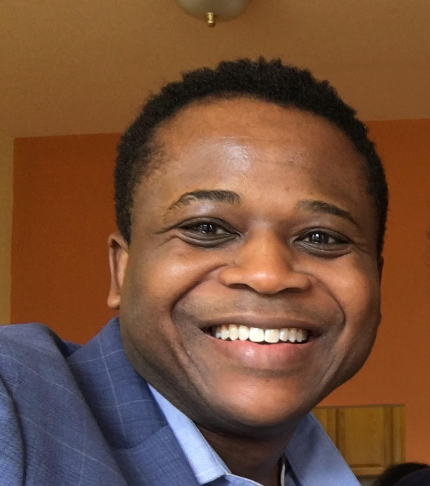

About Me
 Innovative risk analyst with a passion for modeling, analyzing, and mentoring. Responsible for leading a team of analysts in defining, modeling, and rolling out new risk management solutions.
In-depth understanding and execution of models and software that enable clients in the financial sector to manage their portfolios and price insurance products. Strong foundation working with cross-functional international teams including engineering, product management, marketing and sales. Extensive experience on-boarding analysts and new clients.